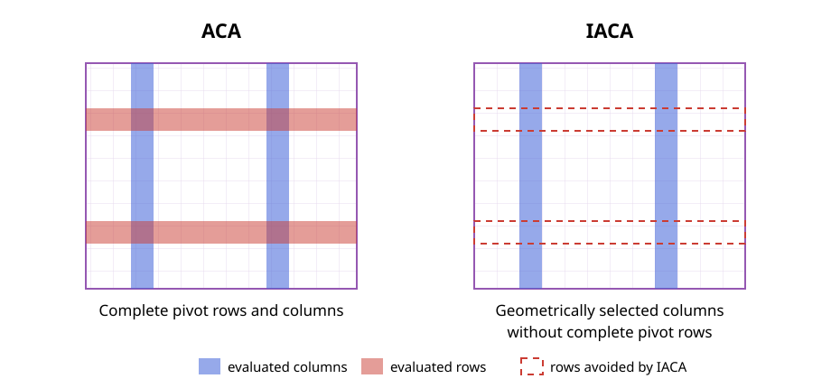

Incomplete Adaptive Cross Approximation
Incomplete Adaptive Cross Approximation (IACA) selects the interpolation indices needed for a nested low-rank representation while evaluating only one complete side of the underlying interaction matrix. It replaces the value search on the other side by a geometric prediction, avoiding matrix entries that standard ACA computes only to locate its next pivot [7].
Nested Low-Rank Approximation
Let $t$ be a cluster of $m$ row indices and let $F(t)$ contain the $n$ column indices of its admissible interactions. The corresponding interaction matrix is
\[\boldsymbol{\mathsf A}_{t,F(t)} \in \mathbb{K}^{m\times n}.\]
Suppose that $I_t\subset t$ and $J_{F(t)}\subset F(t)$ are row and column pivot sets of cardinality $k$. They define the skeleton approximation
\[\boldsymbol{\mathsf A}_{t,F(t)} \approx \boldsymbol{\mathsf A}_{t,J_{F(t)}} \boldsymbol{\mathsf A}_{I_t,J_{F(t)}}^{-1} \boldsymbol{\mathsf A}_{I_t,F(t)}.\]
The first two factors determine a row-cluster basis,
\[\boldsymbol{\mathsf U}_t = \boldsymbol{\mathsf A}_{t,J_{F(t)}} \boldsymbol{\mathsf A}_{I_t,J_{F(t)}}^{-1},\]
and the transposed construction determines the corresponding column-cluster basis. In a nested representation, the index sets are more important than an independent low-rank factorization of every admissible block: parent and child clusters reuse them to construct transfer and coupling matrices.
Standard ACA applied to $\boldsymbol{\mathsf A}_{t,F(t)}$ evaluates $k$ complete columns and $k$ complete rows to obtain
\[\widetilde{\boldsymbol{\mathsf A}}_{t,F(t)} =\boldsymbol{\mathsf P}_k\boldsymbol{\mathsf Q}_k, \qquad \boldsymbol{\mathsf P}_k\in\mathbb{K}^{m\times k}, \quad \boldsymbol{\mathsf Q}_k\in\mathbb{K}^{k\times n}.\]
The nested basis above does not require the complete factor $\boldsymbol{\mathsf Q}_k$. IACA therefore constructs only
\[\boldsymbol{\mathsf A}_{t,J_k} \approx \boldsymbol{\mathsf P}_k\boldsymbol{\mathsf B}_k, \qquad \boldsymbol{\mathsf B}_k\in\mathbb{K}^{k\times k},\]
where $J_k=\{j_1,\ldots,j_k\}$. The row-oriented variant exchanges the two directions and constructs only the required $k\times n$ part.

Incomplete Factorization
Consider the variant in which columns are selected geometrically. At iteration $r$, the geometric strategy supplies $j_r\in F(t)$ without evaluating a residual row. IACA evaluates the column $\boldsymbol{\mathsf A}_{t,j_r}$ and removes the contributions of the previous pivots, producing the residual column
\[\boldsymbol p_r = \boldsymbol{\mathsf A}_{t,j_r} -\sum_{\ell=1}^{r-1} b_{\ell r}\boldsymbol p_\ell.\]
The corresponding row pivot is selected by partial pivoting,
\[i_r =\operatorname*{arg\,max}_{i\in t\setminus I_{r-1}} |p_r(i)|.\]
The coefficients required to update later sampled columns are obtained at the previous pivot rows,
\[b_{\ell r} = \frac{ A(i_\ell,j_r) -\displaystyle\sum_{q=1}^{\ell-1}p_q(i_\ell)b_{qr} }{p_\ell(i_\ell)}, \qquad \ell<r,\]
with $b_{rr}=1$. Thus, $\boldsymbol{\mathsf P}_r$ contains complete residual columns, whereas $\boldsymbol{\mathsf B}_r$ contains only the interpolation data at the selected pivots. A complete residual row is never evaluated. The row-geometric variant follows by transposition.
Because one pivot direction is predicted rather than found from residual values, IACA may require slightly more pivots than ACA. Its advantage is that the number of expensive matrix-entry evaluations no longer grows with the complete far-field set on both sides.
Mimicry Pivoting
The geometrically selected indices should reproduce the spatial distribution of good algebraic pivots. Mimicry pivoting combines three observations about the pivots selected by a fully pivoted ACA [7]:
- they cover the candidate set rather than concentrating in one region,
- they favor its boundary, similarly to Leja points, and
- they favor candidates close to the reference cluster.
Let $Z=\{\boldsymbol z_1,\ldots,\boldsymbol z_n\}$ be the candidate positions, let $Z_{J_{r-1}}$ be the positions selected previously, and let $\boldsymbol c_t$ be the centroid of the reference cluster. For $r>1$, define
\[h_r(\boldsymbol z) =\min_{\boldsymbol y\in Z_{J_{r-1}}} \lVert\boldsymbol z-\boldsymbol y\rVert_2,\]
\[L_r(\boldsymbol z) =\prod_{\boldsymbol y\in Z_{J_{r-1}}} \lVert\boldsymbol z-\boldsymbol y\rVert_2, \qquad w_t(\boldsymbol z) =\frac{1}{\lVert\boldsymbol z-\boldsymbol c_t\rVert_2}.\]
The next geometrical pivot is
\[j_r =\operatorname*{arg\,max}_{j\notin J_{r-1}} \left[ h_r(\boldsymbol z_j) L_r(\boldsymbol z_j)^{2/(r-1)} w_t(\boldsymbol z_j)^4 \right].\]
For $r=1$, only the proximity weight is available, so the point closest to the reference centroid is selected. The minimum-distance factor promotes coverage, the product-distance factor supplies the Leja-like boundary preference, and the inverse-distance factor accounts for the stronger interaction with nearby candidates. The exponents in the combined score are heuristic and were calibrated numerically in the IACA study [2, 7].
MimicryPivoting implements this score directly on the candidate positions. It is appropriate when the candidate set is small enough to inspect in every iteration.
Tree Mimicry Pivoting
For a large union of admissible clusters, evaluating the mimicry score at every basis-function position can itself become expensive. Tree mimicry pivoting applies the same score hierarchically:
- evaluate the score at the centers of the candidate clusters,
- select the best-scoring cluster,
- repeat the selection among its children, and
- evaluate the basis-function positions only after reaching a leaf.
The already selected set $Z_{J_{r-1}}$ always contains the actual basis-function positions, even while candidate cluster centers are being scored. Consequently, the tree search approximates the same geometric objective without a flat search over the complete far field.
TreeMimicryPivoting implements this coarse-to-fine selection. In the bottom-up nested construction it prevents pivot selection from becoming dominant as the far-field candidate set grows and preserves linear construction complexity under the assumptions stated below [7].
Adapted Convergence Criterion
The standard ACA criterion cannot be evaluated because the complementary factor is not available. Let $\boldsymbol{\mathsf R}_r$ denote the conceptual residual of the rank-$r$ interpolant, even though IACA never forms this complete matrix. Consider again the column-geometric variant after $r$ sampled columns. Treating those columns as a deterministic sample of the complete interaction gives the matrix-norm estimate
\[\lVert\boldsymbol{\mathsf A}_{t,F(t)}\rVert_{\mathrm F} \approx \sqrt{\frac{n}{r}} \lVert\boldsymbol{\mathsf A}_{t,J_r}\rVert_{\mathrm F}.\]
Similarly, the latest residual column gives
\[\lVert\boldsymbol{\mathsf R}_r\rVert_{\mathrm F} \approx \sqrt{n}\,\lVert\boldsymbol p_r\rVert_2.\]
Substitution into the desired relative residual condition yields the one-sided criterion
\[\lVert\boldsymbol p_r\rVert_2 \leq \frac{\varepsilon}{\sqrt r} \lVert\boldsymbol{\mathsf A}_{t,J_r}\rVert_{\mathrm F}.\]
The estimates are heuristic because mimicry pivots are deterministic rather than uniform random samples. In particular, a geometrically selected column may already be represented well by the previous pivots. Its residual norm then drops suddenly even though the complete interaction has not converged.
Extrapolation Safeguard
To reject such isolated drops, define the estimated residual history
\[\widehat\rho_\ell=\sqrt n\,\lVert\boldsymbol p_\ell\rVert_2, \qquad \ell=1,\ldots,r-1,\]
and fit a polynomial $P_d$ to $(\ell,\log\widehat\rho_\ell)$. A quadratic fit, $d=2$, is sufficient in the numerical studies. With
\[\widehat a_r =\sqrt{\frac nr} \lVert\boldsymbol{\mathsf A}_{t,J_r}\rVert_{\mathrm F},\]
convergence is accepted only if both the direct estimate above and
\[P_2(r)\leq\log(\varepsilon\widehat a_r)\]
are satisfied. FNormExtrapolator implements this safeguard. Its internal FNormEstimator maintains the one-sided scale from the sampled vector norms without constructing the unavailable complementary factor.
PhaseExtrapolator extends the same idea to directionally filtered tree pivoting. It requires the global history and the current directional phase to predict convergence and accepts termination only after two consecutive successful checks. This is an implementation extension; ordinary IACA uses FNormExtrapolator.
Tolerance in the Nested Construction
An $\mathcal{H}^2$ approximation reuses transfer matrices along paths through the cluster tree, so interpolation errors can accumulate over the admissible levels. If $L_{\mathrm{adm}}$ is the number of levels containing admissible interactions, the IACA construction therefore applies the level-scaled local tolerance
\[\varepsilon_{\mathrm{local}} =\frac{\varepsilon}{L_{\mathrm{adm}}}.\]
This conservative scaling targets the requested global accuracy after the nested bases have been assembled [7].
Computational Cost
Assume a balanced binary cluster tree, a level-independent rank $k$, a bounded number of admissible interactions per cluster, and that evaluating matrix entries dominates the runtime. Under these assumptions:
- an ACA factorization of an $m\times n$ interaction evaluates $k(m+n)$ matrix entries;
- the corresponding IACA step evaluates only the required $m\times k$ factor and its $k\times k$ interpolation data, giving $k(m+k)$ evaluations in the model of [7]; and
- the cost no longer depends directly on the size $n$ of the complete far-field union.
A straightforward top-down nested construction performs $\mathcal{O}(N\log N)$ matrix-entry evaluations. In the bottom-up construction, non-leaf clusters use only the pivots inherited from their children, reducing the candidate side to a size proportional to $k$. Together with tree mimicry pivoting, the resulting construction requires $\mathcal{O}(N)$ matrix-entry evaluations. Both variants produce an $\mathcal{H}^2$ representation with $\mathcal{O}(N)$ storage when the ranks remain bounded [7].
These estimates describe the electrically small or fixed-rank regime. If the numerical rank grows with the problem size, the dependence on $k$ must be retained. The top-down construction offers the more direct accuracy control. The bottom-up construction is intended for the usual engineering tolerances; because it restricts the parent candidates to child pivots, very stringent tolerances can expose an additional approximation error.
For construction, buffer allocation, and interpretation of the returned indices, see Using Incomplete Adaptive Cross Approximation.